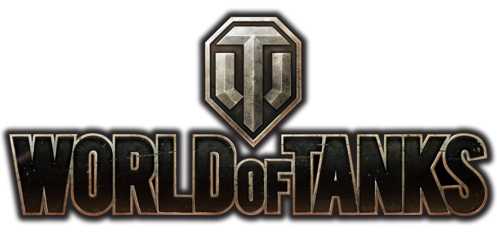

Unrecommended

All of these have a pretty basic theme of them all being team shooters
Counter Strike: Global Offensive
It might be fun to play once you get the skills to know the maps, guns, and prices but it’s so difficult to get to that point
Team Fortress 2
Similarly to the one above, might be fun with the skills to know the weapons and how they work but I have put a good 1,200+ hours into this game and I had not figured most stuff out during that time.
World of Tanks
Again, as with the two above, might be fun when you learn things like maps and reload times and other things like that but i have put a very good amount of time into this game and ive heard people saying how easy it is to move up the tiers in this game however through the multiple years that ive played this game i have managed to get up to tier 6 of 10 and even then this is recent news.